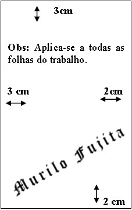
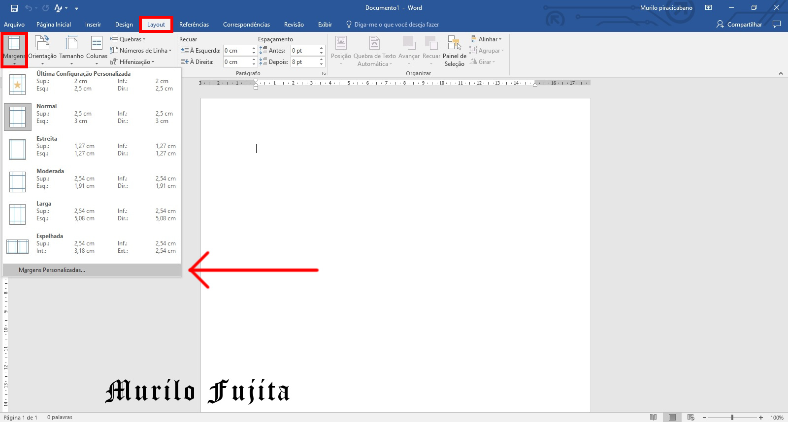
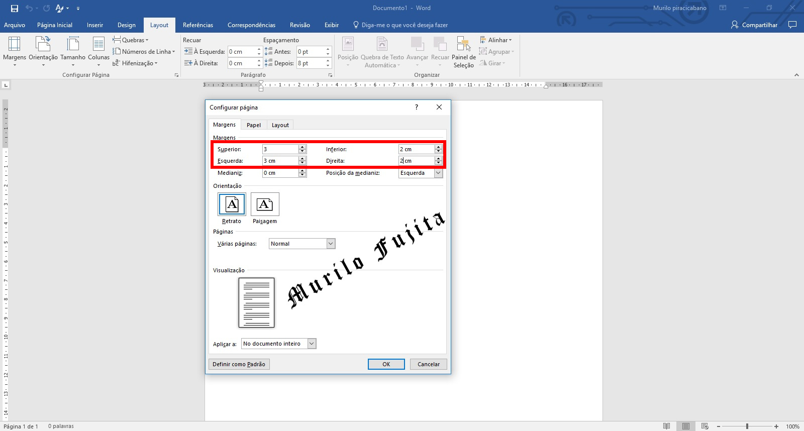

Margem
As folhas deverão apresentar margem esquerda e superior de 3 cm e margens direita e inferior de 2 cm.
Distâncias das margens na Figura 1.
No menu superior vá em Layout.
Clique em Margens.
Clique em Margens personalizadas.
Veja Figura 2.
Configure conforme valores dentro do retâgulo vermelho.
Veja Figura 3.
